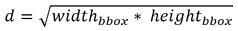

SUBMISSION GUIDELINES
The upper bound of computational complexity is 100MFLOPs.
The upper bound of the model size is 2MB.
We provide the bounding boxes obtained by our detector for training/validation sets. The participants are also allowed to employ their own face detectors.
During the validation phase, each team could send a compressed file (
.ziponly), consisting of 2,000 landmark files (.txt) of the validation set, to fllc3_icme@163.com. We will return the performance to the participants by updating the leaderboard. Each file (.txt) should contain the number of key points along with the predicted coordinates for each point (with integer format). An example is shown in Fig. 1. The coordinates of the top left corner is [0, 0], where the first number refers to horizontal coordinate and the second number refers to vertical coordinate. If multiple faces are detected by the face detector, please just choose the one which has the biggest IOU with the provided bounding box as the output. Note that each team can only submit once a day.The participants should strictly name their e-mail subject in
teamname_FLL3submission format and name Attachment inteamname_mmddyy.zip format. For instance, my team's name is giant and it's February 24, 2021 today. So the subject and attachment of e-mails should be giant_FLL3submission and giant_02242021.zip, respectively.
Important!
You can't get feedback if using the wrong format, since we are using auto grader.
During the test phase, participants need to submit their model and paper within a week, from April 1 - April 7. It will be used for the final evaluation. Specifically, all the training materials including codes, models, and technical reports need to be sent to us before April 7, 2021. To prevent cheating on the test set, the test images will not be released to participants.
The authors acknowledge that if they decide to submit, the resulting curve might be used by the organizers in any related visualizations/results. The authors are prohibited from sharing the results with other contesting teams.

Fig. 1 Example of the landmark file.
Evaluation criteria
Submissions will be evaluated on the area-under-the-curve (AUC) from the cumulative errors distribution (CED) curves.
We will score on the arithmetic mean of the AUC. Besides, further statistics from the CED curves such as the failure rate and average normalized mean error (NME) will also be returned to the participants for inclusion in their papers.
The cumulative curve corresponding to the percentage of test images of which the error is less than a threshold ⍺ will be produced. The area-under-the-curve (AUC) is the area under the cumulative distribution curve calculated up to the threshold ⍺, then divided by that threshold. We set the value of ⍺ to be 0.08. Similarly, we consider each image with a point-to-point normalized mean error of α or greater as failure. NME is computed as:
where "x" denotes the ground truth landmarks for a given face, "y" denotes the corresponding prediction and "d" is computed as . Here, widthbbox and heightbbox are the width and height of the enclosing rectangle of the ground truth landmarks.
constraint:
Due to the invisibility of the nose and mouth under the mask, there are inevitable diversities when people predict the facial landmarks in these areas. For fairness, we decide to ignore some abnormal points when we do evaluations on validation & test sets.
-
In the nose area, we ignore points 57-60, 62-65. Even though people's noses are inborn different from each other, the bridge of the nose is fixed. We can leverage the fixed points, 53, 54, 55, and 61, to measure the length of the nose.
-
In the mouth area, we ignore points 85-87, 89-93, 94-98, 100-102. Mask covers almost the whole mouth, so it is pretty hard to predict what expression it is, so does the width and height of the mouse. However, we can easily predict the midpoint, 88, 99, 103, and 94, due to symmetry.
-
In the eye and eyebrow area, it is visible. So, we take all the points into account.
-
For face profile, sometimes it is challengeable but crucial to differentiate different people. Therefore, we take all these points, from 1 to 33, into account and ask for high accuracy.
Figure2: The key-points used for our annotations